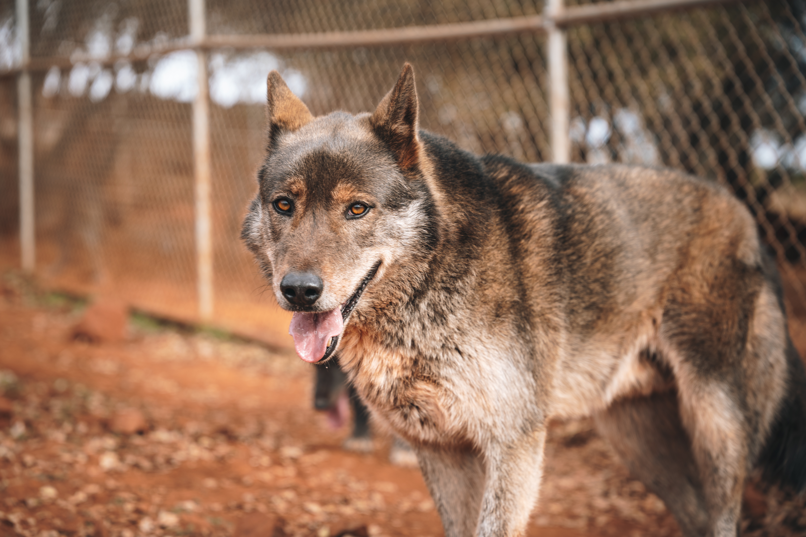
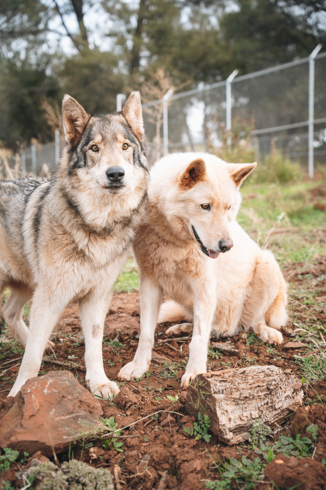

Seminars/Programs
We teach seminars on wolf ecology, ocean pollution, illegal wildlife trade, and more.
If you would like to book us for your school/camp/organization/etc. please email admin@jawspaws.org!
Protecting wolves, ending cruel practices, and building a future where people and predators coexist.
We protect wild wolves and promote coexistence between people and these apex predators, while also advocating to end harmful practices like trapping & poaching.

"The wolf is a keystone species. You remove it and the effects cascade down to the grasses." – Douglas Smith
By promoting conservation, fostering collaboration within our community, and empowering youth with knowledge, we aim to create a future where wolves and humans coexist in harmony. Education is the key—future generations must understand the critical role wolves play in maintaining biodiversity and a healthy planet.
Through conservation programs, non-lethal solutions for ranchers, and educational initiatives, we can safeguard the future of California's wolves while nurturing a deeper connection between people and nature. Together, we can ensure the survival of this iconic species and the ecosystems they support. Protecting wolves is not just about preserving their legacy—it’s about securing a balanced, thriving future for all.

Problem | Solution | How We’re Helping
Wild wolves face numerous threats in their natural habitats, with one of the most devastating being human persecution. Across North America and other parts of the world, wolves are killed by hunters, trappers, and even government agencies who view them as a threat to livestock or fear their presence. Every year, thousands of wolves are killed in the wild, whether through direct hunting, poison, or traps. In the U.S. alone, it's estimated that hundreds of wolves are killed each year, pushing certain populations toward the brink of extinction. Despite their role in maintaining ecological balance by controlling prey populations, wolves are often misunderstood and seen as a nuisance or danger to humans.
The solution to the wolf crisis lies in a combination of legislative protection, public education, and conservation efforts. Advocating for stronger protections under the Endangered Species Act and ensuring that wolves are not persecuted simply for existing in their natural habitats is crucial. Conservationists and wildlife organizations are working tirelessly to stop legal hunting and trapping and to bring awareness to the vital role wolves play in ecosystems. This includes reintroducing wolves to areas where they were once driven out and pushing for policy changes that will ensure their survival.
At Women For Wolves, we are actively involved in advocating for wolf protection laws and raising awareness about the importance of wolves in the wild. We donate to wildlife protection organizations, fundraise to support reintroduction projects, and engage in educational outreach to dispel myths and misconceptions surrounding wolves. Through our educational programs, we aim to teach the public about the ecological benefits of wolves and the ongoing threats they face. We are also involved in direct action by supporting rescue organizations that care for displaced or injured wolves, ensuring that they have a chance to thrive in safe environments. By amplifying the voices of those who fight for wolves' survival, we are helping to create a future where wolves are protected and celebrated.
Wolf-dogs, the hybrid offspring of wolves and domestic dogs, are often bred relentlessly by breeders who prioritize profit over the well-being of the animals. These breeders market wolf-dogs as exotic, mysterious pets, appealing to people who desire something unique without fully understanding the complexities of caring for such a hybrid. Unfortunately, many of these buyers are unprepared for the responsibility of raising a wolf-dog, which requires extensive training, socialization, and specialized care due to their wild instincts. Misunderstood as vicious or dangerous, many wolf-dogs are abandoned or surrendered once their owners realize they cannot handle the challenges of their behavior. As a result, these animals are often put down, sent to overcrowded shelters, or abandoned to roam the streets because they are deemed unmanageable.
The solution lies in curbing irresponsible breeding, educating the public about the true needs of wolf-dogs, and providing support to ensure these animals are properly cared for. Stronger regulations on wolf-dog breeding can prevent exploitation, while education can help potential owners understand the commitment involved in raising a hybrid animal. Additionally, offering resources for training and behavior management can equip owners with the knowledge they need to handle a wolf-dog’s complex needs. Promoting responsible adoption and ensuring that people know what they’re taking on before purchasing a wolf-dog can help reduce the number of animals surrendered due to behavioral issues.
At Women For Wolves, we are actively working to raise awareness about the realities of owning a wolf-dog. We advocate for stricter laws on wolf-dog breeding to prevent overpopulation and unethical practices. Our educational programs teach potential and current wolf-dog owners about proper care, training, and the wild instincts that need to be managed. We also rescue and rehabilitate abandoned wolf-dogs, giving them a safe space while helping them find experienced homes where they can thrive. Through fundraising, advocacy, and public outreach, we aim to break down the misconceptions surrounding wolf-dogs and ensure that they are treated with the care and respect they deserve.
The overbreeding of dogs has become a serious issue, fueled by the demand for specific breeds chosen primarily for their looks, rather than their temperament or suitability to an owner's lifestyle. Many people view dogs as commodities, buying them for appearance, social status, or to fit a trend, without fully understanding the responsibility of raising a pet. This demand encourages unethical breeding practices, such as those seen in "puppy mills," where dogs are bred in poor conditions, leading to health problems, behavioral issues, and a lifetime of suffering. Once the novelty wears off or the challenges of dog ownership become apparent, many of these dogs are surrendered to shelters or abandoned, often facing a bleak future due to the sheer number of animals in need of homes.
The solution to this crisis involves promoting adoption, educating the public about responsible pet ownership, and encouraging people to choose dogs based on compatibility rather than aesthetics. By adopting from shelters and rescues, potential dog owners can help reduce the overwhelming number of dogs left without homes. Education is key—teaching the public about the long-term commitment involved in pet ownership and the importance of selecting a dog that fits their lifestyle can help prevent impulsive decisions driven by appearance or trends.
We are committed to addressing the overbreeding crisis by raising awareness about the importance of adopting dogs from shelters and rescues. We focus on educating the public about responsible pet ownership, emphasizing that choosing a dog should be based on compatibility, temperament, and long-term needs, rather than superficial traits. Through our outreach programs, we encourage people to think critically about pet ownership and the ethical implications of buying a dog as a trend. By supporting local rescues and shelters, we help find loving homes for dogs in need and reduce the strain on the overcrowded shelter system. Through these efforts, we hope to change the way people view and approach dog ownership, promoting compassion and responsibility in every adoption decision.
Women for Wolves is committed to the conservation and rescue of wolves and wolf-dogs, working tirelessly to protect these magnificent creatures from exploitation and neglect. Each year, we help find safe, loving homes for countless wolf-dogs and wolves that have been abandoned or dumped by irresponsible owners. Through strategic partnerships with like-minded nonprofits, we join forces to amplify our impact, advocating for the protection of wolves, ending harmful hunts, and fighting the hatred that fuels their persecution. Together, we are creating a united front to ensure the survival and well-being of wolves and wolf-dogs everywhere.
Looking to partner with us? Contact us today to maximize our global impact.
ContactWomen for Wolves is dedicated to educating youth through seminars, assemblies, and outreach programs that highlight the science, conservation, and importance of wolves. We empower young people to become passionate advocates by offering grants, fostering hands-on involvement, and encouraging social media advocacy. Through these efforts, we inspire the next generation to take action and stand up for wolf conservation.
We teach seminars on wolf ecology, ocean pollution, illegal wildlife trade, and more.
If you would like to book us for your school/camp/organization/etc. please email admin@jawspaws.org!
We also offer grants through art, science, and writing contests for low-income youth who are interested in environmental science.
Women for Wolves hosts several drives and relief events throughout the year in conjunction with other organizations to help at-risk youth. (e.x. shoe drive with Boys and Girls Club) At these events we supply kids with shoes, food, or other necessities.
We encourage youth to get involved by contributing to our various social media campaigns and raising awareness through their favorite platforms!